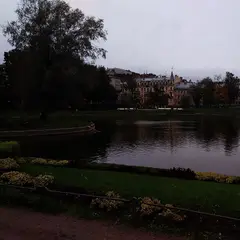
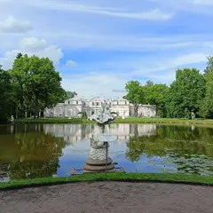
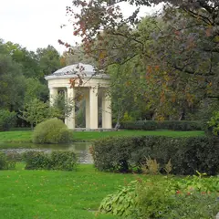
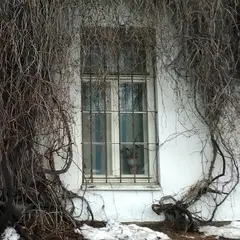
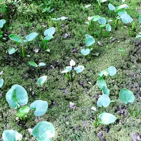
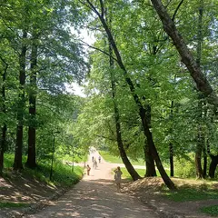

Сезон · данные на 19 октября
Куда сходить осенью в Петербурге
24 плана и 30 мест, где особенно красиво в сентябре и октябре: парки и усадьбы, сады и набережные — например, «Ботанический сад Петра Великого», «Елагин остров» и «Нижний парк Петергофа». После прогулки — кофейня, чайная или ужин в паре минут ходьбы.
- 24 плана
- 30 мест
Осенние планы 24
- Аквапарк «Питерлэнд» · Аквапарк · м. Беговая
- 1 минута пешкомПапаша Клаусс · Ресторан-пивоварня
Горки и тропическое тепло в любую погоду, а пивоварня с видом на залив — прямо по соседству.
Открыть план: Аквапарк и пивоварняПозвать сюда: Аквапарк и пивоварня
Фото: Vasyatka1, CC BY-SA 4.0 · Wikimedia Commons
- Ботанический сад Петра Великого · Сад · м. Петроградская
- 15 минут пешкомLavraki bistro · Рыбный ресторан
Японский сад и оранжереи с тропиками старейшего ботсада страны, а потом 15 минут пешком — средиземноморский рыбный ресторан с видом на Большую Невку.
Открыть план: Ботанический сад и рыба у НевкиПозвать сюда: Ботанический сад и рыба у Невки
Фото: Александровы АГ, CC BY-SA 4.0 · Wikimedia Commons
- Ботанический сад Петра Великого · Сад · м. Петроградская
- 7 минут пешкомBig Wine Freaks · Винный бар
Японский сад и оранжереи с тропиками, а потом 7 минут пешком — шампань-бар, с которого началась гастроулица на Инструментальной.
Открыть план: Ботанический сад и шампань-барПозвать сюда: Ботанический сад и шампань-бар
Фото: Александровы АГ, CC BY-SA 4.0 · Wikimedia Commons
- Ленинградский зоопарк · Зоопарк · м. Горьковская
- 7 минут пешкомAtom Heart Coffee · Кофейня
Тигры, приматы и птицы в одном из старейших зоопарков страны, а потом 7 минут пешком — яркая кофейня в эстетике 60–70-х.
Открыть план: Зоопарк и кофейня в духе 70-хПозвать сюда: Зоопарк и кофейня в духе 70-х
Фото: Александровы АГ, CC BY-SA 4.0 · Wikimedia Commons
- Лахта Центр: обзорная площадка и набережная · Смотровая площадка · м. Беговая
- 24 минуты пешкомПарк 300-летия Санкт-Петербурга · Парк
Панорама города и залива с самого высокого небоскрёба Европы, а потом прогулка по молу парка 300-летия — солнце садится прямо в воду.
Открыть план: Лахта: 83-й этаж и закат над заливомПозвать сюда: Лахта: 83-й этаж и закат над заливом
Фото: TomPlay148, CC BY-SA 3.0 · Wikimedia Commons
- Сенатская площадь и Медный всадник · Площадь · м. Адмиралтейская
- 2 минуты пешкомАлександровский сад · Сад
- 7 минут пешкомMichèle · Ресторан
Пётр на гранитной скале и Нева, потом сквер с фонтаном у золотого шпиля Адмиралтейства, а ужин — в парижской брассери «Англетера».
Открыть план: Медный всадник, сквер у шпиля и брассериПозвать сюда: Медный всадник, сквер у шпиля и брассери
Фото: Huanivanovich, CC BY-SA 3.0 · Wikimedia Commons
- Парк 300-летия Санкт-Петербурга · Парк · м. Беговая
- 24 минуты пешкомЛахта Центр: обзорная площадка и набережная · Смотровая площадка
Прогулка по длинному молу на закате, а потом подъём на 83-й этаж самого высокого небоскрёба Европы — огни города и залива.
Открыть план: Мол парка 300-летия и ЛахтаПозвать сюда: Мол парка 300-летия и Лахта
Фото: Germash19, CC BY-SA 4.0 · Wikimedia Commons
- Нижний парк Петергофа · Парк · ж/д Новый Петергоф
- дальше на метро или таксиПарк Александрия · Парк
Большой каскад и аллеи Нижнего парка до залива, а потом полчаса пешком вдоль воды (или пара минут на такси) — соседняя Александрия: готическая капелла и пустые тропинки.
Открыть план: Петергоф: каскады и АлександрияПозвать сюда: Петергоф: каскады и Александрия
Фото: Клеткин, CC BY-SA 3.0 · Wikimedia Commons
- Екатерининский парк · Парк · ж/д Царское Село
- 10 минут пешкомАлександровский парк (Пушкин) · Парк
Камеронова галерея и Большой пруд Екатерининского парка, а потом — тихий соседний Александровский с Китайской деревней и почти без туристов.
Открыть план: Царское Село: два парка за деньПозвать сюда: Царское Село: два парка за день
Фото: Никонико962, CC BY-SA 4.0 · Wikimedia Commons

- Юсуповский сад · Сад · м. Садовая
- 1 минута пешкомMad Espresso Team · Кофейня
Пейзажный сад у Сенной с прудом и котами-старожилами, а у выхода — одна из ключевых спешелти-кофеен города.
Открыть план: Юсуповский сад и спешелтиПозвать сюда: Юсуповский сад и спешелти
Фото: KristenRyckaert, CC BY-SA 4.0 · Wikimedia Commons
- Парк «Дубки» · Парк · ж/д Сестрорецк
Петровская дубовая роща на мысу, песчаный берег и сосны — электричка до Сестрорецка, и солнце садится прямо над водой.
Открыть план: Дубки: закат над заливомПозвать сюда: Дубки: закат над заливом
Фото: t-rex, CC BY 3.0 · Wikimedia Commons
- Елагин остров · Парк · м. Крестовский остров
Остров-парк без машин: пруды, белки и Стрелка, где все вместе провожают солнце над заливом.
Открыть план: Елагин остров и закатПозвать сюда: Елагин остров и закат
Фото: Александровы АГ, CC BY-SA 4.0 · Wikimedia Commons
- Елагин остров · Парк · м. Крестовский остров
Остров-парк без машин: пруды, белки, дворец — и западная Стрелка, где провожают солнце над заливом. Осенью тут особенно красиво.
Открыть план: Елагин остров и закат на СтрелкеПозвать сюда: Елагин остров и закат на Стрелке
Фото: Александровы АГ, CC BY-SA 4.0 · Wikimedia Commons

- Ораниенбаум · Парк · ж/д Ораниенбаум
Тихая усадьба у залива: Китайский дворец, пергола в виноградных листьях и олени — туристов здесь в разы меньше, чем в Петергофе.
Открыть план: Ораниенбаум: Китайский дворец и перголаПозвать сюда: Ораниенбаум: Китайский дворец и пергола
Фото: Екатерина Борисова, CC BY-SA 4.0 · Wikimedia Commons
- Павловский парк · Парк · ж/д Павловск
Огромный пейзажный парк с долинами, мостиками и колоннадой Аполлона — и белки, которые берут орешки с ладони.
Открыть план: Павловск с орешками для белокПозвать сюда: Павловск с орешками для белок
Фото: Игорь Гордеев, CC BY-SA 4.0 · Wikimedia Commons
- Павловский парк · Парк · ж/д Павловск
Огромный пейзажный парк с долинами и колоннадой Аполлона; белки берут орешки с ладони — возьмите с собой, будет весело.
Открыть план: Павловск: долины, мостики и белкиПозвать сюда: Павловск: долины, мостики и белки
Фото: Игорь Гордеев, CC BY-SA 4.0 · Wikimedia Commons
- Нижний парк Петергофа · Парк · ж/д Новый Петергоф
Каскады, Самсон и аллеи до самого залива — фотографий хватит на год вперёд. Закладывайте целый день и проверьте сезон фонтанов.
Открыть план: Петергоф на целый деньПозвать сюда: Петергоф на целый день
Фото: Клеткин, CC BY-SA 3.0 · Wikimedia Commons
- Кронштадт: Якорная площадь и Морской собор · Прогулочный район · м. Беговая
- дальше на метро или таксиОстров фортов · Парк
Морской собор и тихие улицы города-крепости, а потом — Остров фортов: маяк, аллея флота и форты на горизонте. Между точками — на автобусе или такси.
Открыть план: Кронштадт: собор и фортыПозвать сюда: Кронштадт: собор и форты
- Летний сад · Сад · м. Площадь Ленина
- 14 минут пешкомDuo Gastrobar · Гастробар
Мраморные статуи и аллеи старейшего сада города, а дальше 14 минут пешком по тихим улицам к маленькому гастробару, с которого началась новая ресторанная волна Петербурга.
Открыть план: Летний сад и гастробар у кирхиПозвать сюда: Летний сад и гастробар у кирхи
- Приморский парк Победы · Парк · м. Крестовский остров
- 12 минут пешкомРусская рыбалка · Рыбный ресторан
Аллеи Крестовского до самого залива, а потом 12 минут пешком — ресторан у воды, где рыбу можно выловить самим, а её приготовят на кухне.
Открыть план: Приморский парк и рыба из садкаПозвать сюда: Приморский парк и рыба из садка
- Таврический сад · Сад · м. Чернышевская
- 10 минут пешкомMindal Cafe · Кавказский ресторан
Холмы, лужайки и пруды с мостиками, а потом 10 минут пешком — аккуратные хинкали, хачапури и мцвади с углей в Mindal Cafe.
Открыть план: Таврический сад и кавказский ужинПозвать сюда: Таврический сад и кавказский ужин
- Таврический сад · Сад · м. Чернышевская
- 18 минут пешкомПенка · Кофейня
Пруды с мостиками и холмы любимого сада жителей центра, а потом 18 минут пешком — кофейня у Чернышевской с вишнёвым пирогом и вечерними кинопоказами.
Открыть план: Таврический сад и кофе с пирогомПозвать сюда: Таврический сад и кофе с пирогом
- MazaPark на Бухарестской · Парк развлечений · м. Бухарестская
Боулинг, лазертаг, VR и автодром в одном месте, а ночью — безлимитный тариф до утра.
Открыть план: Ночь в парке развлеченийПозвать сюда: Ночь в парке развлечений
- MazaPark на Байконурской · Парк развлечений · м. Комендантский проспект
Большой парк развлечений на севере: аттракционы, боулинг и VR по одному билету, а по ночам — тусовки до утра.
Открыть план: Сотня аттракционов по одному билетуПозвать сюда: Сотня аттракционов по одному билету


Где красиво осенью 24 из 30
ул. Профессора Попова, 2П
Новое
Старейший ботанический сад страны: дендрарий, японский сад и оранжереи с тропиками; осенью сюда приходят любоваться клёнами.
Подробнее и маршрут: Ботанический сад Петра ВеликогоПозвать сюда: Ботанический сад Петра Великого
Фото: Александровы АГ, CC BY-SA 4.0 · Wikimedia Commons
Елагин остров, 4Т
Новое
Остров-парк без машин: пруды, белки, дворец и Стрелка, где провожают солнце над заливом. Осенью — одно из лучших мест города.
Подробнее и маршрут: Елагин островПозвать сюда: Елагин остров
Фото: Александровы АГ, CC BY-SA 4.0 · Wikimedia Commons
Петергоф, Разводная ул., 2
Новое
Каскады, Самсон и аллеи до самого залива — на Петергоф стоит закладывать целый день. Сезон фонтанов уточняйте перед поездкой.
Подробнее и маршрут: Нижний парк ПетергофаПозвать сюда: Нижний парк Петергофа
Фото: Клеткин, CC BY-SA 3.0 · Wikimedia Commons
Павловск, Садовая ул., 20
Новое
Огромный пейзажный парк с долинами, мостиками и колоннадой Аполлона; белки здесь почти ручные — возьмите орешки.
Подробнее и маршрут: Павловский паркПозвать сюда: Павловский парк
Фото: Игорь Гордеев, CC BY-SA 4.0 · Wikimedia Commons
Приморский пр., 74
Новое
Молодой парк на берегу залива: длинный мол, вид на Лахта Центр и закаты прямо над водой — особенно хорош вечером.
Подробнее и маршрут: Парк 300-летия Санкт-ПетербургаПозвать сюда: Парк 300-летия Санкт-Петербурга
Фото: Germash19, CC BY-SA 4.0 · Wikimedia Commons
Приморский пр., 72
Новое
Крупный крытый аквапарк у залива: горки, бассейны и тропическое тепло в любую погоду.
Подробнее и маршрут: Аквапарк «Питерлэнд»Позвать сюда: Аквапарк «Питерлэнд»
Фото: Vasyatka1, CC BY-SA 4.0 · Wikimedia Commons
Пушкин, Садовая ул., 7
Новое
Парк Царского Села с Камероновой галереей, Большим прудом и павильонами; осенью — один из самых красивых маршрутов области.
Подробнее и маршрут: Екатерининский паркПозвать сюда: Екатерининский парк
Фото: Никонико962, CC BY-SA 4.0 · Wikimedia Commons
Александровский парк, 1
Новое
Один из старейших зоопарков страны на Петроградке: тигры, приматы, хищники и птицы, работает круглый год.
Подробнее и маршрут: Ленинградский зоопаркПозвать сюда: Ленинградский зоопарк
Фото: Александровы АГ, CC BY-SA 4.0 · Wikimedia Commons
Ломоносов, Дворцовый пр., 48
Новое
Тихая усадьба у залива: Китайский дворец, пергола в виноградных листьях и олени; утром и вечером вход бывает свободным.
Подробнее и маршрут: ОраниенбаумПозвать сюда: Ораниенбаум
Фото: Екатерина Борисова, CC BY-SA 4.0 · Wikimedia Commons
Сестрорецк, Большой Литейный пер., 37
Новое
Петровская дубовая роща на мысу у залива: песчаный берег, сосны и закаты прямо над водой — легко доехать на электричке.
Подробнее и маршрут: Парк «Дубки»Позвать сюда: Парк «Дубки»
Фото: t-rex, CC BY 3.0 · Wikimedia Commons
Петергоф, парк Александрия
Новое
Пейзажный парк-дача у моря по соседству с Нижним парком: готическая капелла, Коттедж и пустые тропинки вдоль залива.
Подробнее и маршрут: Парк АлександрияПозвать сюда: Парк Александрия
Фото: Egregiu, CC BY-SA 4.0 · Wikimedia Commons
Сенатская пл.
Новое
Пётр на гранитной скале и выход к Неве с видом на Васильевский — обязательная точка первой прогулки по центру.
Подробнее и маршрут: Сенатская площадь и Медный всадникПозвать сюда: Сенатская площадь и Медный всадник
Фото: Huanivanovich, CC BY-SA 3.0 · Wikimedia Commons
Садовая ул., 54
Новое
Пейзажный сад у Сенной с большим прудом и островком; местные коты-старожилы встречают гостей, открыт с утра до позднего вечера.
Подробнее и маршрут: Юсуповский садПозвать сюда: Юсуповский сад
Фото: KristenRyckaert, CC BY-SA 4.0 · Wikimedia Commons
Кронверкский пр., Александровский парк
Новое
Тенистый парк вокруг кронверка у «Горьковской»: рукой подать до крепости, мечети и Троицкого моста.
Подробнее и маршрут: Александровский паркПозвать сюда: Александровский парк
Фото: Екатерина Борисова, CC BY-SA 4.0 · Wikimedia Commons

Лифляндская ул., 12
Новое
Один из старейших парков города: пруды, петровские каналы и тихие аллеи недалеко от Нарвской.
Подробнее и маршрут: Парк ЕкатерингофПозвать сюда: Парк Екатерингоф
Фото: Kaat2001, CC BY-SA 3.0 · Wikimedia Commons

Институтский пер., 5, лит.У
Новое
Дендропарк с деревьями со всего света и старыми прудами у «Лесной» — тихое место, которое знают в основном местные.
Подробнее и маршрут: Парк Лесотехнического университетаПозвать сюда: Парк Лесотехнического университета
Фото: Алиса Кобзун, CC BY-SA 4.0 · Wikimedia Commons

пр. Тореза, парк Сосновка
Новое
Настоящий сосновый лес в черте города: тропы для бега и велосипеда, белки и тишина — хорошо выбраться на полдня.
Подробнее и маршрут: Парк СосновкаПозвать сюда: Парк Сосновка
Фото: GAlexandrova, CC BY-SA 4.0 · Wikimedia Commons

Фермское ш., Удельный парк
Новое
Лесопарк у «Пионерской» с холмами, прудами и соснами: летом пикники, осенью рыжие кроны и почти лесная тишина.
Подробнее и маршрут: Удельный паркПозвать сюда: Удельный парк
Фото: Spb.Terminator, CC BY-SA 4.0 · Wikimedia Commons
Парголово, Выборгское ш., Шуваловский парк
Новое
Холмистый парк в Парголово: гора Парнас с видом на озеро, неоготическая церковь и склеп — атмосферная осенняя вылазка.
Подробнее и маршрут: Шуваловский паркПозвать сюда: Шуваловский парк
Фото: Мария Сигова, CC BY-SA 3.0 · Wikimedia Commons
Потёмкинская ул., 4А
Новое
Любимый сад жителей центра: пруды с мостиками, холмы и лужайки, рядом «Ленинград Центр» — можно совместить с вечерним шоу.
Подробнее и маршрут: Таврический садПозвать сюда: Таврический сад
Пушкин, Дворцовая ул., 2
Новое
Соседний с Екатерининским, но тише: Китайская деревня, пруды и старые аллеи без толп туристов.
Подробнее и маршрут: Александровский парк (Пушкин)Позвать сюда: Александровский парк (Пушкин)
Адмиралтейский пр.
Новое
Сквер у Адмиралтейства с фонтаном и видом на золотой шпиль — удобная передышка между Дворцовой и Исаакием.
Подробнее и маршрут: Александровский садПозвать сюда: Александровский сад
наб. Кутузова, 30
Новое
Старейший регулярный сад города: мраморные статуи, фонтаны и знаменитая ограда у Невы. Осенью аллеи особенно хороши.
Кронштадт, Цитадельское ш., 14Ж
Новое
Огромный парк на западе Кронштадта: аллея флота, маяк, форты на горизонте и широкие виды на залив.
Подробнее и маршрут: Остров фортовПозвать сюда: Остров фортов


Как позвать
- Выбери план, место или событие — в карточке адрес, цены и маршрут в Яндекс Картах.
- Нажми «Позвать сюда» — соберётся приглашение-игра для свидания или голосование для компании.
- Отправь ссылку в любой мессенджер: тебе ответят, а компания отметит, куда и когда может. Бесплатно и без регистрации.